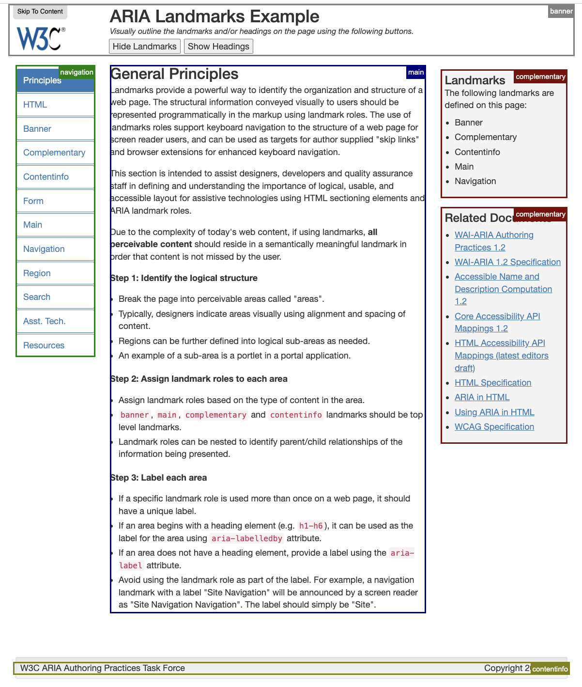
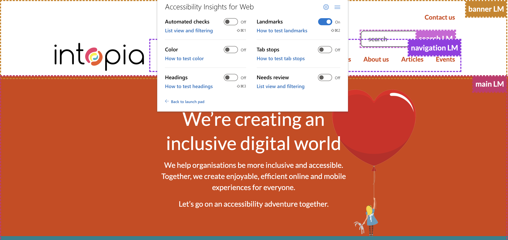
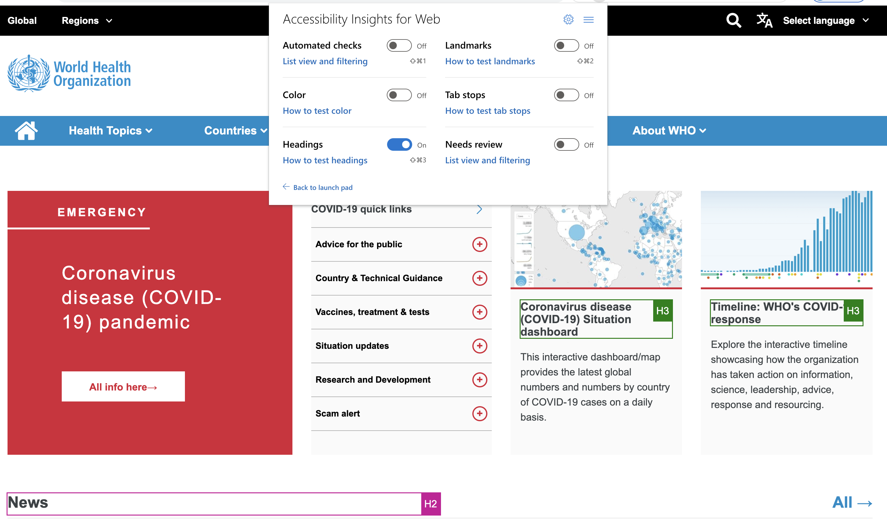
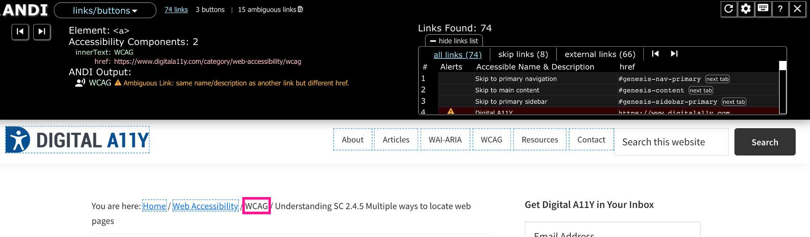

Slide instructions
SPACEBAR to move forward through slides.
SHIFT & SPACEBAR to move backwards through slides.
LEFT ARROW & RIGHT ARROW to move through sections.
ESC to see overview and ESC again to exit.
F to enter presentation mode and ESC to exit.
Session 2
Testing for Accessibility
What you will need
Download at: bit.ly/

Overview
- Landmarks
- Headings
- Links
- Skip links
Session 1 - Review

What do you recall?
- Four types of accessibility testing
- Which disability groups benefit from keyboard accessibility?
- Which disability groups benefit from good focus indication?
Landmarks

Landmark regions
- As a: screen reader or keyboard user
- I want: to easily navigate to common regions of a page
- So that: I don’t have to navigate linearly through content
Screen reader demo of navigating landmarks
There are two ways to identify landmarks, using HTML elements and ARIA roles.
Where possible, you should always use HTML elements for landmarks rather than ARIA roles as these elements have semantics and behaviour already built-in.
| Landmark | ARIA role | HTML element |
|---|---|---|
| Banner | role="banner" |
<header> |
| ContentInfo | role="contentinfo" |
<footer> |
| Navigation | role="navigation" |
<nav> |
| Main | role="main" |
<main> |
| Complementary | role="complementary" |
<aside> |
| Region | role="region" |
<section> |
| Article | role="article" |
<article> |
Landmark types

1.3.1 Info & Relationships (A)
Information, structure, and relationships conveyed through presentation can be programmatically determined or are available in text.
Semi-automated test | Microsoft Insights > Landmarks | Visual check
2.4.1 Bypass blocks (A)
A mechanism is available to bypass blocks of content that are repeated on multiple Web pages.
Semi-automated test Microsoft Insights > Landmarks | Visual check
Landmarks testing tools demo
Microsoft Insights landmarks testing
Checklist for Landmarks
| Criteria | Details | |
|---|---|---|
| 1.3.1 Landmark purpose | ||
| 2.4.1 Bypass function |
| Criteria | |
|---|---|
Exercise 1
Landmark testing
- Type: Individual
- Time: 5 mins
Instructions
- Open up your organisation/product homepage
- Use Microsoft Accessibility Insights > Adhoc tools > Landmarks (or ANDI > Structures > Landmarks)
- Post any issues to the chat as follows:
- 1.3.1 Info & Relationships: (Describe issue)
- Best practice issues: (Describe issue)
Headings
Heading structure
- As a: screen reader user
- I want: descriptive headings that are hierarchical structured like a table of contents
- So that: I can understand the structure of content on a page and easily navigate to sections of content
According to WebAIM's 2021 Screen Reader User Survey:
- 67.7% use headings to find information
- 85.7% of respondents find heading levels very or somewhat useful
1.3.1 Info & Relationships (A)
Information, structure, and relationships conveyed through presentation can be programmatically determined or are available in text.
Semi-automated test| Microsoft Insights > Headings | Visual check
2.4.6 Headings and Labels (AA)
Headings and labels describe topic or purpose
Semi-automated test | Microsoft Insights > Headings | Visual check
Headings testing tools demo
Microsoft Insights headings testing
WCAG Checklist for Headings
| Criteria | Details | |
|---|---|---|
| 2.4.6 Heading purpose | ||
| 1.3.1 Heading level | ||
| 1.3.1 Heading determinable | ||
| 1.3.1 Heading determinable (continued) |
Best Practice Checklist for Headings
| Criteria | |
|---|---|
Exercise 2
Testing headings
- Type: Individual
- Time: 5 mins
Instructions
- Open up your organisation/product home page
- Use Microsoft Accessibility Insights > Adhoc tools > Headings
- Post any heading issues you find to the chat as follows:
- 1.3.1 Info & Relationships: (Describe issue)
- 2.4.6 Heading and Labels: (Describe issue)
- Best practices: (Describe issue)
Links
Links
- As a: screen reader user or user with motor or cognitive impairment
- I want: links to clearly describe where they will take me, and
- I want: links that take me to the same page to be labelled the same
- So that: it is easy for me to decide if I want to follow a link
2.4.4 Link purpose (In context) (A)
The purpose of each link can be determined from the link text alone or from the link text together with its context
Semi-automated test | MS Insights | Visual check
Link text is meaningful on its own

Link text is meaningful when combined with its context

Links that open tabs/windows/files are indicated


3.2.4 Consistent Identification (AA)
Components that have the same functionality within a set of Web pages are identified consistently.
Semi-automated test | MS Insights | Visual check
Consistent identification failure example
Checklist for links
| Criteria | Details | |
|---|---|---|
| 2.4.4 Link purpose | ||
| 3.2.4 Link consistency | ||
| Link notification |
Skip links
Skip links
- As a: screen reader user or keyboard user
- I want: to skip over content that is repeated across your website
- So that: I don’t have to navigate through it each time
2.4.1 Bypass Blocks (A)
A mechanism is available to bypass blocks of content that are repeated on multiple Web pages
Semi-automated test | Keyboard | Manual check
Skip link example

Checklist for skip links
| Criteria | Details | |
|---|---|---|
| 2.4.4 Skip link purpose | ||
| 2.4.1 Skip link function | ||
| 2.4.7 Focus visible | ||
| Skip link position |
Exercise 3
Link testing challenge
- Type: Individual
- Time: 10 mins
Instructions
- Use your keyboard and MS Insights to test links on your organisation/product homepage
- Post any issues you find to the chat as follows:
- 2.4.4 Link purpose: (Describe issue)
- 2.4.7 Focus visible:(Describe issue)
- 2.4.1 Bypass Blocks:(Describe issue)
- Best practice:(Describe issue)
Session 2 - That's a Wrap!